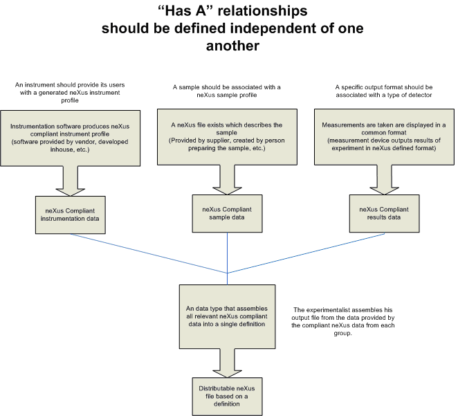
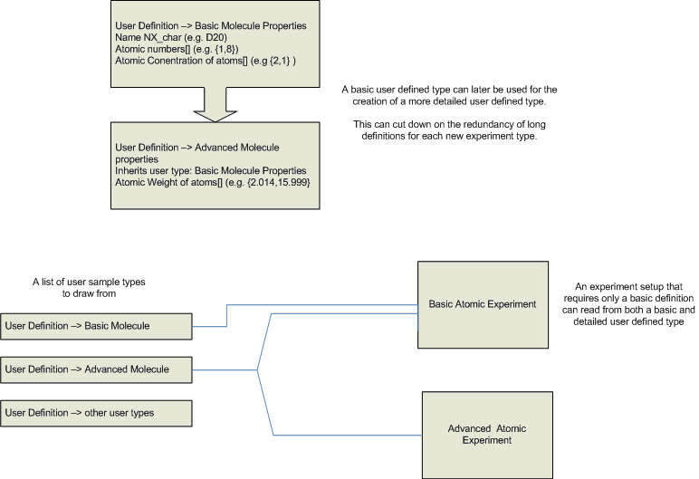

Containers and Inheritance¶
Currently Under Construction - will be linked to the discussion page when reviewed and completed
This page presents how neXus could benefit from an object/container-orientated approach to its user defined instrument definitions. By allowing base user definitions for components, datasets from from full datasets can be expressed as a sum of components.
The XSLT standard and XQuery are methods that can possibly realize the extraction of data from one or more XML based neXus definition and create a new neXus XML document as desired.
Relationship between Inheritance and Containers in a neXus dataset¶

“Instrument” definitions can be assembled in a multitude of ways using the neXus predefined classes. An instrument definitions are most often is a superset of discrete components, with additional information which that is general to all instrument definitions. The data contained in a data set can be described via the “has a”/“is a” relationship encountered in object orientated programming.
Traits that are inherent to all data sets in the neXus format can be inherited from a parent class. This would be an “is a” relation, as the data set “is a” set of neXus data, and has such properties.
A dataset is also a container, and thus contain small data subsets, usually base neXus classes. This is a “has a” relationship, as a container “has a” data subset.

What is of interest in this discussion is the “has a” relationship. A parent data set acts as a container for many simpler datasets. If these “subsets” are specified independently, a greater deal of compatibility and standardization can be achieved between software written by vendors, scientists and engineers working on different aspects of a project.
XLST, Xquery, or a similar XML transform standard can be used to realize this type of conversion in practice.
User-defined components can be inherited by more specific user components¶

Should additional data be needed for a more complicated equipment or data library, it can inherent the previous definition, and add additional information. This allows experiments that only require a basic component definition to also use datasets that have additional data appended.
–[Greg Sonnenfeld] (Greg_Sonnenfeld.html “wikilink”) 15:22, 27 January 2007 (UTC)